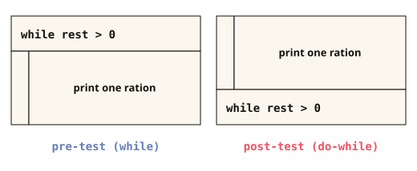

Watch out, infinite loop: If the condition never becomes false (for example because i++ is missing), the loop runs forever. Then the only thing that helps is the stop button of your IDE. Happens to everyone, once a week.
Chapter 7 of 11 · while, do-while, for
Loops
Nobody writes the same line a hundred times. That's what loops are for, and there are three ways to build them.
THE PROBLEM
The program should count from 1 to 10. How many lines does that take?
Zaehlen.java
System.out.println(1);
System.out.println(2);
System.out.println(3);
// and so on: seven more lines up to 10
CONSOLE
Three lines for three numbers. Up to 10 that would be ten lines, up to 1,000 a thousand.
Zaehlen.java
for (int i = 1; i <= 10; i++) {
System.out.println(i);
}
CONSOLE
Three lines, whether up to 10 or up to 1,000: you only change the number in the condition. This chapter shows how loops work.
After this chapter you can
- tell the three loops apart:
while,do-whileandfor - spot an infinite loop before it hangs your program
- run a for loop step by step in your head
- explain when a loop doesn't run at all and when it runs exactly once
- draw a repetition as a structogram
- put a loop inside a loop and say how often the inner body runs
- use
breakandcontinueto leave a single round or the whole loop
7.1 Pre-test loop: while
A loop repeats a block instead of you writing it out a hundred times. while means “as long as”: the block runs again and again as long as the condition is true.
STRUCTURE · CLICK A PART
while (condition) {
statements to repeat
}The block in the curly braces is called the body. The condition is checked before every round, as with if: it evaluates to true or false.
while means “as long as” and introduces the loop. No semicolon goes after the parenthesis: with while (i < 5); the body is empty, and the block below no longer belongs to the loop.Condition: a comparison like
battery < 100 or a boolean variable. If you check for equality, write ==, not =.The curly braces mark the start and end of the body. If the condition evaluates to
false, execution continues with the first line after the closing brace.Loop body: the statements for one round, such as
charge();. At least one of them must change a variable from the condition, for example with i++. Otherwise the condition never evaluates to false, and the loop runs forever.DieDreiSchleifen.java (1 of 3)
// while, "WHILE condition: repeat" (checks BEFORE)
while (battery < 100) {
charge();
}LINE BY LINE
while (battery < 100) | checks before every round whether the battery is not yet full. If that is true, the body runs. |
charge(); | the body. After that it goes back up to the check. For the loop to ever end, charge() has to increase the value of battery. |
} | If the condition is false, execution continues after this brace. |
Remember this
Something in the body has to move the condition toward false, otherwise the loop runs forever.
First a puzzle: the countdown got scrambled.
Code puzzle: Sort the lines so that the program prints 3, 2, 1 and then “Start!”. Remember: What has to exist BEFORE the loop? What has to happen IN it so that it ends?
int rakete = 3;
while (rakete > 0) {
System.out.println(rakete);
rakete = rakete - 1;
}
System.out.println("Start!");
7.2 Counting loop: for
If it is known beforehand how often something should run, for is the right loop. Everything organizational is in one line: where the counter starts, how long it keeps going and what happens after each round.
STRUCTURE · CLICK A PART
for (start; condition; Step) {
statements to repeat
}A semicolon separates the three parts in the parentheses. The start runs once, the condition is checked before every round, the step is executed after every round.
for introduces the counting loop. The parentheses after it contain everything that controls the counter. As with while, no semicolon goes after the closing parenthesis.Start: declares the counter and gives it its initial value, for example
int i = 0. The counter only exists in the loop, after its closing brace it is gone.The two semicolons separate start, condition and step from one another. There is none after the step: the compiler reports
for (int i = 0; i < 3; i++;) as an error.Condition: usually a comparison with the counter, for example
i < 3. Watch for < or <=: with start 0, i < 3 gives three rounds, i <= 3 four.Step: changes the counter, usually with
i++, which increases it by 1. It has to change the counter so that the condition eventually evaluates to false, otherwise the loop runs forever.The curly braces mark the start and end of the body. If the condition evaluates to
false, execution continues with the first line after the closing brace.Loop body: the statements for one round. Here you can use the current value of the counter, for example
System.out.println("Round " + i);.DieDreiSchleifen.java (2 of 3)
// for, the counting loop: everything organizational in one line
for (int i = 0; i < 3; i++) {
System.out.println("Round " + i);
}LINE BY LINE
int i = 0 | Start: creates the counter i and sets it to 0. Runs exactly once, before the first round. Counting “from 0” becomes important in Chapter 8. |
i < 3 | Keep going as long as? Checked before every round. On false it is over. |
i++ | After every round: increase i by 1. |
System.out.println("Round " + i); | the body, each time with the current value of i. |
DESK CHECK · ROUND BY ROUND
i | i < 3 ? | what happens |
0 | true | Output “Round 0”, then i++ turns the 0 into a 1 |
1 | true | Output “Round 1”, then i becomes 2 |
2 | true | Output “Round 2”, then i becomes 3 |
3 | false | Done: The loop is finished after 3 rounds, execution continues after the closing brace |
It gets even clearer in the stepper below.
Remember this
The i from the for line only exists in the loop, after the closing brace it is gone (Chapter 4). What is supposed to survive the loop (sum, counter, flag) you therefore declare before it.
And now reading code, the supreme discipline. What does this loop print?
Summe.java (excerpt)
int sum = 0;
for (int i = 1; i <= 3; i++) {
sum = sum + i;
}
System.out.println(sum); // println comes AFTER the loop!
CONSOLE
Finally loop and if together: the clapping game from elementary school in Java (with % from Chapter 3):
Klatschspiel.java (excerpt)
for (int i = 1; i <= 10; i++) {
if (i % 3 == 0) { // Remainder 0 when dividing by 3?
System.out.println(i + " CLAP! ");
} else {
System.out.println(i);
}
}
CONSOLE
7.3 Post-test loop: do-while
Sometimes the body has to run before there is anything to check at all: you only know whether a PIN is wrong once it has been entered. do-while therefore puts the check at the end.
STRUCTURE · CLICK A PART
do {
statements to repeat
} while (condition);A semicolon follows the condition. The check happens only after the body, so it runs at least once.
do means “do” and introduces the loop. Nothing is checked here, the program goes straight into the body.The curly braces mark the start and end of the body. Directly after the closing brace comes the check with
while.Loop body: the statements for one round, such as
enterPin();. Here, too, something in the body has to make sure the condition eventually evaluates to false.while introduces the check at the end here. It is the same keyword as in the while loop, only it comes after the body instead of before.Condition: for example
pinWrong. If it evaluates to true, the next round starts again at do. On false, execution continues with the line below.The semicolon ends the do-while loop. If it is missing, the compiler reports
';' expected. With the while loop, by contrast, there is none after the condition.DieDreiSchleifen.java (3 of 3)
// do-while, "do FIRST, check AFTER" (runs at least once)
do {
enterPin();
} while (pinWrong);LINE BY LINE
do { | enters the body without a check. |
enterPin(); | the body: The first input always happens. |
} while (pinWrong); | only now the check. If the PIN is wrong, execution goes back to do, otherwise it continues below this line. |
Two almost identical loops. The only difference: the condition is checked before or after the body. Does that make a difference?
Decide first: hasTicket is false. What does the while block (variant A) print?
Decided! Now run both blocks and compare.
Variant A: while
boolean hasTicket = false;
while (hasTicket) {
rideOneStop();
}Variant B: do-while
boolean hasTicket = false;
do {
rideOneStop();
} while (hasTicket);Answer: run both first, then expand!
Without a ticket, A rides no station, B exactly one.
- while checks before the body:
hasTicketisfalsefrom the start, so the body runs zero times. - do-while checks only after the body:
rideOneStop()runs once, and only then does the check evaluate tofalse.
Remember this
while checks beforehand, so it may never run. do-while checks afterward, so it runs at least once.
Explained differently: the three loops comparedoptional
- while checks before the body (pre-test). If the condition is
falseright the first time, the body runs zero times. - do-while checks after the body (post-test). The body always runs at least once, for example with a PIN input.
- for also checks before every round. Start, condition and step are in one line: the counting loop.
Rule of thumb: Number known → for. Number unknown → while. “Do first, then check” → do-while (the rarest).
7.4 Repetition in the structogram
You know three basic forms from Chapter 6, the fourth is repetition. It gets an L-shaped frame: the bar with the condition and a narrow strip at the side enclose the body. Whether while or do-while, you can see it immediately: the condition bar sits at the top or at the bottom.

On the left the condition is above the body: checked first, and if in doubt the body never runs (pre-test). On the right it is below the body: the body runs at least once (post-test). That is the difference between variant A and B from the ticket example, just drawn.
Remember this
Four basic forms are enough for any program: sequence, branch, multi-way selection, repetition.
You first, then Java
Draw the countdown from the code puzzle above as a structogram. Which basic form is in it, and what goes in the condition bar?
7.5 Nested loops
The body of a loop can contain anything, including a second loop. The outer one then counts the rows, the inner one what happens within a row.
STRUCTURE · CLICK A PART
for (outer start; condition; Step) {
for (inner start; condition; Step) {
statements for one entry of the row
}
statements at the end of the row
}For each run of the outer loop, the inner one runs through completely.
The outer loop extends from the first
for to the last closing brace. One round of the outer loop produces one row, in the times table row counts from 1 to 3.The inner loop sits in the body of the outer one. It counts the entries of a row, in the times table
column from 1 to 4.Outer and inner start: The outer one runs exactly once, the inner one anew in every round of the outer one. So the inner counter starts from the beginning again in every row. The two counters need different names, for example
row and column.Condition: Each loop has its own, for example
row <= 3 on the outside and column <= 4 on the inside. The inner condition may also use the counter of the outer loop, then each row has a different length.Step: changes the counter of its own loop, so
row++ on the outside and column++ on the inside. A common mistake is row++ in the inner loop: then column never changes, and the inner loop runs forever.Statements for one entry: the body of the inner loop, for example
line = line + (row * column) + " ";. Here you can use both counters, the outer and the inner one.Statements at the end of the row: They come after the inner loop, but still inside the outer one, and therefore run once per row. An example is printing the finished row with
System.out.println(line.trim());.TimesTable.java
public class TimesTable {
public static void main(String[] args) {
for (int row = 1; row <= 3; row++) {
String line = "";
for (int column = 1; column <= 4; column++) {
line = line + (row * column) + " ";
}
System.out.println(line.trim());
}
}
}
CONSOLE
LINE BY LINE
for (int row = 1; row <= 3; row++) | the outer loop: three rounds, one per output line. |
String line = ""; | is in the outer loop: Each row starts with an empty String. |
for (int column = 1; column <= 4; column++) | the inner loop: runs four times in every round of the outer one. |
line = line + (row * column) + " "; | appends the product and a space. In row 2, line grows to “2 4 6 8 ” this way. |
System.out.println(line.trim()); | comes after the inner loop, but still in the outer loop: once per row. trim() cuts off the last space. |
The counters are deliberately named row and column, not i and j. With two loops inside each other, a descriptive name decides between “readable” and “guessing”.
Remember this
The rounds multiply: 3 outer times 4 inner is twelve runs of the inner body, not seven. With 1,000 entries each, that is a million steps, and you notice it.
7.6 Jump statements: break and continue
Sometimes you don't want to count to the end: What you were looking for has been found, or a round should be skipped. There are two words for that.
STRUCTURE · CLICK A PART
break; leave the loop immediately
continue; skip this roundAfter break, execution continues after the closing brace of the loop, after continue with the next round. Both go in the body, usually inside an if.
break ends the whole loop, even if its condition still evaluates to true. In nested loops it only affects the innermost one it is in. break is typically used after a match: if (number == searchValue) { break; }continue skips the rest of the body. In a for loop, the step follows, for example i++, then the check. Careful in a while loop: if the i++ comes after the continue, it is skipped, and the loop runs forever.The semicolon:
break and continue are statements of their own and end with ; like every statement. If another statement follows in the same block, the compiler reports unreachable statement, because it could never run.EmergencyExit.java
public class EmergencyExit {
public static void main(String[] args) {
for (int i = 1; i <= 6; i++) {
if (i == 3) {
continue;
}
if (i == 5) {
break;
}
System.out.println(i);
}
}
}
CONSOLE
DESK CHECK · ROUND BY ROUND
i | i == 3 ? | i == 5 ? | Output |
1 | false | false | 1 |
2 | false | false | 2 |
3 | true: continue | not checked anymore | none: continue skips the rest of this round, then i++ |
4 | false | false | 4 |
5 | false | true: break | none: break ends the whole loop, the 6 is never checked |
Remember this
breakmeans “get out of here”,continuemeans “skip this round”.- In nested loops,
breakonly affects the innermost loop it is in.

Use both sparingly: If the exit condition is at the top in the parentheses, you can read the loop in one go. Rule of thumb: break when you have found what you were looking for, otherwise better adjust the condition.
That's enough for now
whilechecks beforehand, so it may never run.do-whilechecks afterward, so it runs at least once.forcounts: start / condition / step in one line. Number known:for. Unknown:while.- Something in the body has to move the condition toward
false, otherwise the loop runs forever. - The
ifrom the for line only exists in the loop. Declare sums and counters before it. - Structogram: L-frame, condition bar at the top (
while) or at the bottom (do-while). - When nested, the rounds multiply.
breakleaves the loop,continueskips a round.
Checkpoint
1. What goes inside the parentheses of an if?
The condition is always a boolean expression: comparisons, combined with &&, ||, !.
2. Which loop is guaranteed to run at least once?
do-while checks the condition only AFTER the first round. So the body always runs at least once.
3. How many times does this loop print? for (int i = 0; i < 4; i++) { System.out.println(i); }
i starts at 0 and runs as long as i < 4: so 0, 1, 2, 3. When i = 4 the condition is false, and that is the end. Counting “from 0” becomes important in Chapter 8.
4. What is the difference between = and ==?
= stores a value in the variable, == checks whether two values are equal. Mixing them up is THE classic mistake.
5. When is (age >= 18 && hasTicket) true?
&& = AND: both conditions must be true. For “one is enough” there would be || (OR).
6. input is a String with the content "yes". How do you check that correctly?
You compare Strings (and all objects) with .equals(), which checks the CONTENT. == only checks whether it is the same object.